호족에서 무신, 원 간섭을 지나
새 왕조의 문턱까지
강의에서 먼저 기억하라고 한 왕과 사건을 네 시기로 따라가고, 경제·문화는 주제별로 정리해요.
- 네 시기 + 주제 고려 초기 → 문벌귀족 시기 → 무신 집권기와 몽골 항쟁 → 원 간섭기와 고려 말. 경제·불교·문화는 고려 전 시기에 걸친 주제별 정리라 시기가 겹쳐요.
- 컷마다 왕(대수)·연도 → 그림 → 대화 → 배경 → 전개 → 결과를 읽어요. 건너뛴 왕은 이름을 밝히거나 ‘중간 왕 생략’으로 표시해요.
- 큰 흐름 끝마다 ‘이 부분에서 외울 것’으로 왕·사건을 이어서 정리해요.
① 고려 초기
태조가 후삼국을 통일한 뒤 광종·성종이 왕권과 통치 제도를 다졌다. 그사이 거란이 세 차례 쳐들어왔다.
후삼국을 통일한 태조
1대 태조 왕건918–943 재위
918 고려 건국 · 936 후삼국 통일
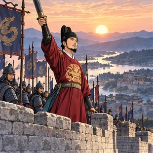
학습용 요약 대화 · 실제 발언을 그대로 옮긴 것이 아니에요.
태조전쟁에 지친 백성부터 살피겠다.
공신 · 설명용 인물통일에 공을 세운 이들에게도 보답해 주십시오.
- 배경통일 전쟁으로 백성은 지쳤고, 지방 호족의 힘이 셌다.
- 전개곡식을 빌려주는 창고 흑창을 두고, 공신에게는 공로에 따라 역분전을 나눠 주었다.
- 함께신하에게는 정계·계백료서를, 뒤의 왕들에게는 훈요 10조를 남겼다.
흐름 보충 · 호족과 거란
기인 제도와 사심관 제도로 지방 세력을 견제했다. 거란이 보낸 낙타는 만부교에 묶어 굶겨 죽였다(거란을 경계).
시험으로 관리를 뽑다
4대 광종949–975 재위
956 노비안검법 · 958 과거제
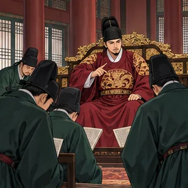
학습용 요약 대화 · 실제 발언을 그대로 옮긴 것이 아니에요.
광종왕이 자주 바뀌었다. 왕의 힘부터 세우겠다.
쌍기시험으로 관리를 뽑는 과거제를 건의합니다.
- 배경태조 뒤 왕이 자주 바뀌어 왕권이 약했고, 호족은 노비를 많이 거느렸다.
- 전개노비안검법으로 억울하게 노비가 된 사람을 양인으로 되돌리고, 쌍기의 건의로 과거제를 시작했다.
- 결과호족의 힘이 줄고, 왕이 직접 관리를 뽑아 왕권이 강해졌다.
- 함께광덕·준풍이라는 독자 연호를 썼다.
12목에 지방관, 수도에 국자감
6대 성종981–997 재위
983 12목 설치 · 992 국자감
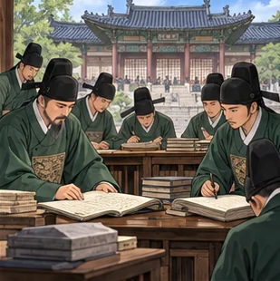
학습용 요약 대화 · 실제 발언을 그대로 옮긴 것이 아니에요.
최승로시무 28조로 유교에 따른 정치를 건의합니다.
성종12목에 지방관을 보내고 국자감을 세우겠다.
- 배경여러 왕을 섬긴 최승로가 개혁안 시무 28조를 올렸다.
- 전개전국 12목에 처음으로 지방관을 보내고, 수도에 국립 학교 국자감을 세웠다.
- 결과중앙의 힘이 지방까지 닿았다.
- 함께태조 때의 흑창을 의창으로 넓혔다.
선택 심화 · 고려의 기관 (그중 도병마사 먼저)
도병마사는 국방을 논의하던 회의로, 원 간섭기에 도평의사사가 되었다. 고려 삼사는 화폐·곡식 회계, 어사대는 감찰을 맡았다. 지방은 5도와 국경 지역인 양계(병마사)로 나뉘었다.
말로 막고, 싸워서 이기다
6대 성종 → 8대 현종993–1019
993 1차 · 1010 2차 · 1018–1019 3차
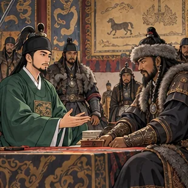
학습용 요약 대화 · 실제 발언을 그대로 옮긴 것이 아니에요.
서희고려는 고구려를 이은 나라요. 옛 고구려 땅은 우리 몫이오.
거란 장수 · 설명용 인물좋소. 이번에는 군사를 물리겠소.
- 배경거란은 발해를 멸망시킨 나라라, 고려는 처음부터 거란을 경계했다.
- 전개1차(성종) 서희가 담판으로 강동 6주를 얻었다. 2차(현종)는 7대 목종을 몰아낸 강조의 정변을 구실로 쳐들어와, 왕이 나주까지 피란하고 양규가 맞섰다.
- 결과3차에 강감찬이 귀주대첩(1019)으로 크게 이겼다. 전쟁 뒤 개경에 나성, 국경에 천리장성을 쌓았다.
흐름 보충 · 거란과 몽골은 다른 전쟁
거란 침입(993–1019)과 몽골 침입(1231–)은 200년 넘게 떨어져 있다. 거란 때 새긴 것이 초조대장경, 몽골 때 다시 새긴 것이 팔만대장경이다. 거란에 대비해 3대 정종 때 광군을 두었다.
② 문벌귀족 시기
숙종·예종이 여진에 맞서고 관학을 살렸지만, 인종 때 외척 이자겸의 난과 묘청의 난이 이어졌다.
별무반과 동북 9성
15대 숙종 → 16대 예종1095–1122
1104 별무반 · 1107 동북 9성
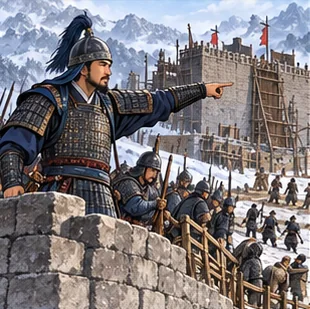
학습용 요약 대화 · 실제 발언을 그대로 옮긴 것이 아니에요.
숙종여진의 기병을 막을 새 부대, 별무반을 만들어라.
윤관예종의 명으로 여진을 몰아내고 9성을 쌓겠습니다.
- 배경여진이 성장해 북쪽 국경을 위협했다.
- 전개숙종이 별무반(신기군·신보군·항마군)을 만들고, 아들 예종 때 윤관이 이 부대로 여진을 몰아내 동북 9성을 쌓았다.
- 결과9성은 지키기 어려워 얼마 뒤(1109) 여진에게 돌려주었다.
흐름 보충 · 숙종의 다른 정책
주전도감에서 해동통보와 은병(활구)을 만들고, 서적포를 두어 책을 펴냈다.
관학을 다시 살린 예종
16대 예종1105–1122 재위
양현고 · 국자감 7재 · 청연각·보문각
그림: 성종 장면과 같은 국자감 공부 장면을 다시 썼어요.
학습용 요약 대화 · 실제 발언을 그대로 옮긴 것이 아니에요.
학생 · 설명용 인물요즘은 9재 학당에 가야 과거에 붙는대.
예종국자감을 살리자. 양현고와 7재를 두겠다.
- 배경문종 때 최충이 세운 사립 9재 학당이 인기를 끌어 국자감이 약해졌다.
- 전개예종이 장학 재단 양현고를 두고, 국자감에 전문 강좌 7재를 열었다.
- 결과궁 안에 청연각·보문각을 두어 학문 연구도 북돋웠다.
이자겸의 난, 이어 묘청의 난
17대 인종1122–1146 재위
1126 이자겸의 난 → 1135 묘청의 서경 천도 운동
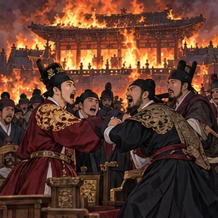
학습용 요약 대화 · 실제 발언을 그대로 옮긴 것이 아니에요.
신하 · 설명용 인물이자겸과 척준경이 궁궐에 불을 질렀소!
묘청서경으로 도읍을 옮기고 금을 정벌합시다.
- 배경외척 이자겸 집안이 왕비를 여러 번 내며 권력을 쥐었다.
- 전개1126 이자겸이 척준경과 난을 일으켰다. 9년 뒤 묘청이 금에 대한 사대를 거부하며 서경 천도·금 정벌을 내세워 서경에서 일어났다.
- 결과개경파 김부식이 묘청의 난을 진압했고, 문신 중심 정치가 이어졌다.
③ 무신 집권기와 몽골 항쟁
무신 정변 뒤 무신이 약 100년 권력을 잡았다. 최씨 정권 때 몽골이 쳐들어와 강화도로 옮겨 싸웠고, 개경 환도와 함께 무신 정권이 끝났다.
무신 정변에서 최충헌까지
18대 의종 때 시작1170–1270 무신 집권
1170 무신 정변 · 1196 최충헌 집권
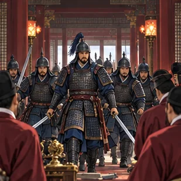
학습용 요약 대화 · 실제 발언을 그대로 옮긴 것이 아니에요.
정중부문신의 차별을 더는 참지 않겠다!
최충헌교정도감을 두고, 왕께 봉사 10조를 올리겠다.
- 배경문신 중심 정치에서 무신들이 오랫동안 차별받았다.
- 전개1170 이의방·정중부가 정변을 일으켰고, 경대승·이의민으로 권력자가 자주 바뀌었다.
- 결과1196 최충헌이 권력을 잡아 왕에게 봉사 10조를 올렸다. 뒤에 교정도감을 두어 그 중심으로 다스렸고, 최씨 집안이 대를 이어 권력을 쥐었다.
흐름 보충 · 무신 집권기의 봉기
반무신: 김보당·조위총(서경) / 공주 명학소: 망이·망소이 / 농민: 김사미·효심 / 노비: 만적(신분 해방). 몽골 항쟁과는 다른 갈래의 저항이다.
최우, 강화도로 도읍을 옮기다
23대 고종 · 집권자 최우1213–1259 재위
1231 몽골 침입 · 1232 강화 천도
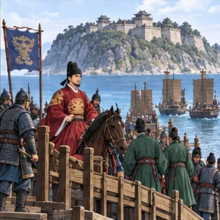
학습용 요약 대화 · 실제 발언을 그대로 옮긴 것이 아니에요.
최우몽골은 기병이 강하다. 바다 건너 강화도로 가자.
신하 · 설명용 인물관리 인사는 이미 최우 공의 집 정방에서 정합니다.
- 배경최우는 집에 인사 기구 정방을 두고 권력을 쥐고 있었다. 1231 몽골이 사신 피살을 구실로 쳐들어왔다.
- 전개1232 최우가 강화도로 도읍을 옮겨 오래 버틸 준비를 했다.
- 결과조정은 섬에서 버티고, 본토의 백성들은 각지에서 몽골군과 싸웠다.
처인성과 충주성의 김윤후
23대 고종1213–1259 재위
1232 처인성 · 1253 충주성 · 팔만대장경
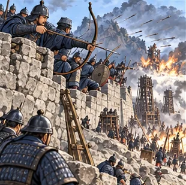
학습용 요약 대화 · 실제 발언을 그대로 옮긴 것이 아니에요.
김윤후처인성에서 적장 살리타를 쓰러뜨렸다!
백성 · 설명용 인물충주성에서도 함께 끝까지 지킵시다.
- 배경조정이 강화도에 있는 동안 몽골군이 본토를 휩쓸었다.
- 전개승려 김윤후가 처인성(1232)에서 적장 살리타를 쓰러뜨리고, 뒤에 충주성(1253)도 지켜 냈다.
- 같은 때몽골 침입으로 초조대장경과 황룡사 9층 목탑이 불탔다. 부처의 힘으로 나라를 지키려 팔만대장경을 다시 새겼다.
흐름 보충 · 다른 항전
귀주성의 박서, 죽주성의 송문주도 몽골군을 막아 냈다.
삼별초, 강화에서 제주까지
24대 원종 때1270–1273 항쟁
1270 개경 환도 → 강화 → 진도 → 제주 → 1273 진압
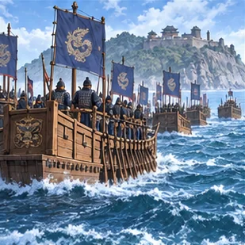
학습용 요약 대화 · 실제 발언을 그대로 옮긴 것이 아니에요.
삼별초 · 설명용 인물개경 환도는 따를 수 없다. 진도로 간다!
삼별초 장수 · 설명용 인물진도가 무너지면 제주에서 버팁시다.
- 배경삼별초는 최씨 정권의 군사 조직이었다.
- 전개개경 환도에 반발해 강화도에서 진도(배중손, 용장성)로, 다시 제주로 옮기며 싸웠다.
- 결과1273 고려·몽골 연합군에 진압되었다. 이 무렵부터 고려는 원의 간섭을 받았다.
④ 원 간섭기와 고려 말
원의 간섭 아래 권문세족이 성장했고, 원이 약해지자 공민왕이 반원 개혁을 폈다. 고려 말 왜구와 싸우며 떠오른 이성계가 위화도에서 회군해 새 왕조를 열었다.
원의 간섭과 권문세족
24대 원종 → 25대 충렬왕원 간섭기 1270–1351
1274 충렬왕 즉위 · 정동행성 · 응방 · 공녀 · 몽골풍
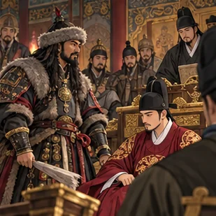
학습용 요약 대화 · 실제 발언을 그대로 옮긴 것이 아니에요.
원 관리 · 설명용 인물일본 원정을 위해 정동행성을 두겠소.
고려 관리 · 설명용 인물응방이 매를 거두고, 공녀까지 끌려갑니다.
- 배경1270 개경 환도 뒤 24대 원종 때부터 원의 간섭이 시작되었다. 원은 고려를 거쳐 일본을 치려 했다(두 차례 원정 모두 실패).
- 전개25대 충렬왕(1274 즉위) 때부터 간섭이 깊어졌다. 원정을 위해 둔 정동행성이 고려 일에 간섭했고, 응방(매)과 공녀(결혼도감)로 사람과 물자를 거둬 갔다. 변발·호복 같은 몽골풍도 퍼졌다.
- 결과원 간섭기에 성장한 권문세족이 도평의사사를 장악해 정치를 좌우했다.
흐름 보충 · 개혁 시도
충목왕 때 정치도감을 두어 잘못된 정치를 바로잡으려 했다.
공민왕의 반원 개혁
31대 공민왕1351–1374 재위
1356 기철 숙청·쌍성총관부 수복 · 1366 전민변정도감
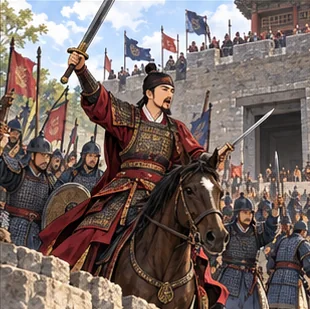
학습용 요약 대화 · 실제 발언을 그대로 옮긴 것이 아니에요.
공민왕기철 세력을 몰아내고 쌍성총관부를 되찾아라!
신돈빼앗긴 땅과 노비를 주인에게 돌려주겠습니다.
- 배경원이 약해지는 사이, 원 간섭기에 성장한 권문세족이 땅과 노비를 늘려 갔다.
- 전개1356 원 황후의 오빠 기철 세력을 숙청하고, 쌍성총관부를 쳐서 철령 이북 땅을 되찾았다. 1366 신돈에게 전민변정도감을 맡겨 억울하게 빼앗긴 땅과 노비를 돌려주었다.
- 결과홍건적·왜구 침입이 이어지던 1374, 공민왕이 살해되면서 개혁이 멈췄다.
흐름 보충 · 홍건적
홍건적이 개경까지 쳐들어오자 공민왕은 안동으로 피란했다.
화포로 왜구를 물리치다
32대 우왕1374–1388 재위
1376 홍산 · 1380 진포 · 1380 황산
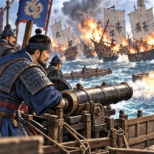
학습용 요약 대화 · 실제 발언을 그대로 옮긴 것이 아니에요.
최무선화약을 만들었다. 화포로 진포의 왜구 배를 불태우자!
이성계진포에서 달아난 왜구는 황산에서 막겠소.
- 배경북쪽에서는 홍건적, 남쪽에서는 왜구가 쉴 새 없이 쳐들어왔다.
- 전개최영이 홍산에서, 최무선이 화포로 진포에서, 이성계가 황산에서 왜구를 물리쳤다.
- 결과싸움에서 이름을 얻은 최영과 이성계가 떠올랐다.
1389 · 다음 창왕 때 · 박위의 쓰시마 정벌
위화도 회군(1388) 뒤인 1389년, 33대 창왕 때 박위가 왜구의 근거지 쓰시마를 쳤다. 조선 세종 때 이종무의 쓰시마 정벌과 구분한다.
위화도 회군에서 조선 건국까지
32대 우왕 → 34대 공양왕1388–1392
1388 위화도 회군 · 1391 과전법 · 1392 조선 건국
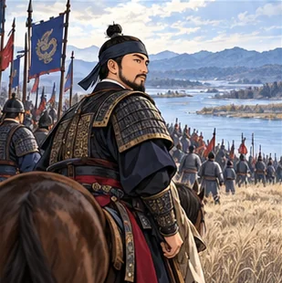
학습용 요약 대화 · 실제 발언을 그대로 옮긴 것이 아니에요.
최영명이 아직 약할 때 요동을 치자.
이성계이길 수 없는 싸움이오. 위화도에서 군대를 돌리겠소.
- 배경원이 기울고 명이 일어서는 가운데, 명이 철령 이북 땅을 내놓으라고 했다(철령위).
- 전개우왕과 최영이 요동 정벌을 추진했지만, 이성계는 위화도에서 군대를 돌려 최영을 몰아냈다.
- 결과33대 창왕을 거쳐 34대 공양왕 때 1391 과전법을 시행했고, 1392 이성계가 즉위해 조선이 세워졌다.
⑤ 경제 · 불교 · 문화 (주제별)
토지 제도·불교·공예·인쇄·역사서는 여러 왕 대에 걸친 주제별 정리다. 앞의 정치 흐름과 시기가 겹치고, 정치 사건의 순서가 아니다.
땅이 아니라 세금 거둘 권리
태조 → 경종 → 공양왕940 · 976 · 1391
역분전(태조) → 전시과(976 경종) → 과전법(1391)
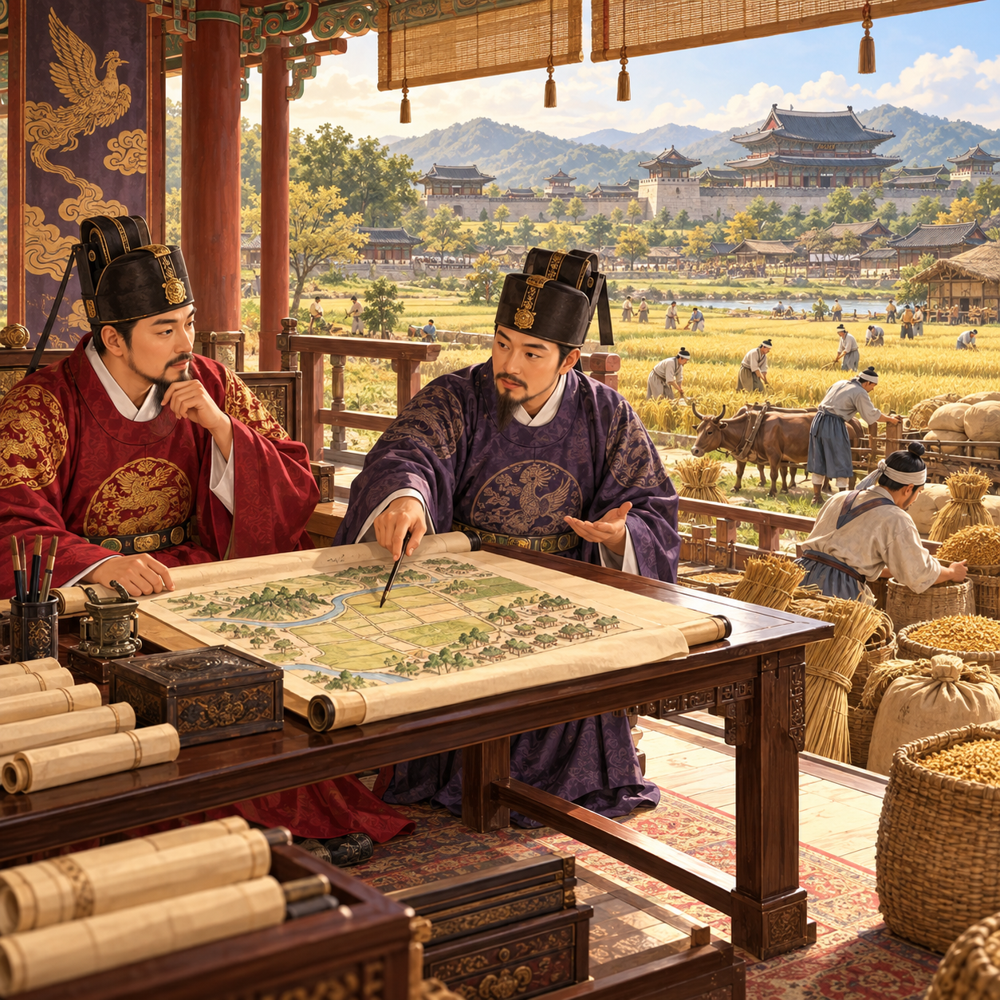
학습용 요약 대화 · 실제 발언을 그대로 옮긴 것이 아니에요.
관리 · 설명용 인물이 땅에서 거두는 세금을 관리의 몫으로 받는다.
농민 · 설명용 인물소로 땅을 깊이 갈아 수확이 늘었지요.
- 배경태조는 공신에게 공로에 따라 역분전을 주었다.
- 전개976 경종이 전시과를 만들어, 관리에게 등급에 따라 농토(전지)와 땔감 숲(시지)에서 세금을 거둘 권리를 주었다.
- 결과고려 말 이 질서가 무너지자 1391 과전법으로 다시 정리했다.
- 농업소를 이용한 깊이갈이가 일반화되었다.
그림 안내
토지와 세금 제도를 보여 주는 개념 그림이에요. 관리가 받은 것은 땅 자체가 아니라 그 땅에서 세금을 거둘 권리예요.
흐름 보충 · 무역·시장·화폐·구제
벽란도는 송·일본·아라비아 등 여러 나라 상인이 오간 무역항이다. 경시서가 시장을 감독하고 나라가 관영상점을 운영했다. 화폐는 성종 때 건원중보, 숙종 때 해동통보·은병. 제위보는 기금의 이자로 빈민을 도왔다.
의천과 지눌, 두 수행법
의천 → 약 100년 뒤 지눌문벌귀족 시기 → 무신 집권기
의천 = 숙종의 동생 · 지눌 = 그보다 약 100년 뒤
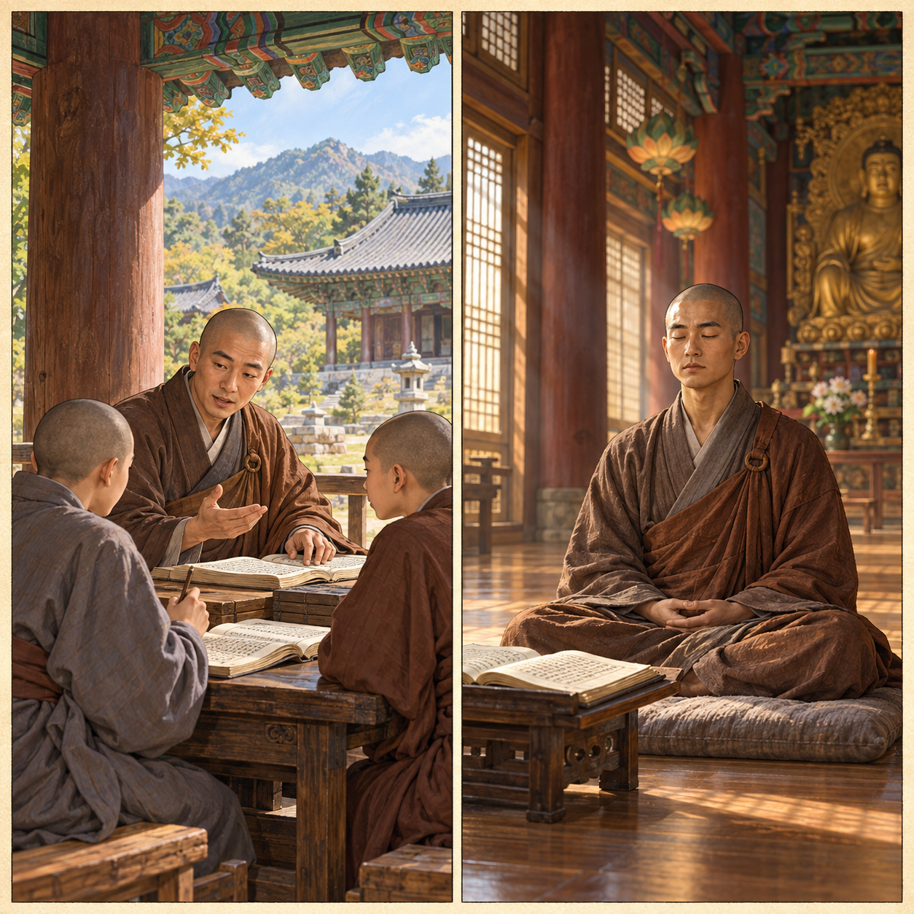
학습용 요약 대화 · 실제 발언을 그대로 옮긴 것이 아니에요.
경전을 공부하는 스님 · 설명용 인물경전을 깊이 읽어 이치를 배운다.
참선하는 스님 · 설명용 인물고요히 앉아 마음을 닦는다.
- 과제경전 공부(교종)와 참선(선종)으로 나뉜 불교를 어떻게 함께 닦을지가 고민이었다.
- 의천천태종을 열고, 공부와 수행을 함께 하자는 교관겸수를 내세웠다.
- 지눌수선사 결사를 이끌며 정혜쌍수와 돈오점수를 내세웠다.
그림 안내
두 스님은 공부와 참선이라는 수행 방법을 보여 주는 개념 그림이에요. 의천과 지눌이 실제로 만나 나눈 대화가 아니에요.
선택 심화 · 다른 스님
의천은 교장(속장경)도 펴냈다. 혜심은 유불 일치설, 요세는 백련 결사, 균여는 보현십원가.
비색 청자와 상감 청자
청자 = 비색 → 상감청자 · 탑 = 경천사지 10층 석탑
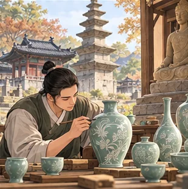
학습용 요약 대화 · 실제 발언을 그대로 옮긴 것이 아니에요.
도공 · 설명용 인물청자 겉을 파고 다른 흙을 메워 상감 무늬를 넣는다.
스님 · 설명용 인물절에는 층이 많은 탑도 세웠지요.
- 색고려청자의 맑은 푸른빛을 비색이라 한다.
- 기법겉을 파내고 다른 흙을 메워 굽는 상감청자가 나왔다. 자개를 붙인 나전칠기도 고려 공예다.
- 탑원의 영향을 받은 경천사지 10층 석탑(조선 세조 때 원각사지 탑과 구분), 평창 월정사 팔각 9층 석탑.
흐름 보충 · 그림과 건축
그림은 수월관음도(불화)와 천산대렵도(사냥 그림). 건축은 수덕사 대웅전, 부석사 무량수전(배흘림기둥), 봉정사 극락전.
남아 있는 가장 오래된 금속활자본
32대 우왕 때1377
1377 청주 흥덕사 · 직지심체요절
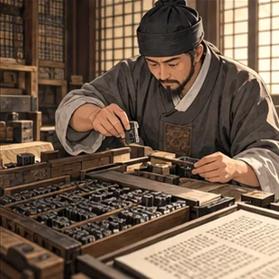
학습용 요약 대화 · 실제 발언을 그대로 옮긴 것이 아니에요.
장인 · 설명용 인물금속 활자를 짜서 책을 찍는다.
스님 · 설명용 인물청주 흥덕사에서 찍은 직지심체요절이오.
- 무엇직지심체요절은 지금 남아 있는 가장 오래된 금속활자본이다.
- 어디청주 흥덕사에서 찍었다(1377).
- 구분상정고금예문도 금속활자로 찍었다고 전하지만 책은 남아 있지 않다.
역사서 다섯 권과 이제현
김부식 → 이규보·각훈 → 일연·이승휴인종 때 → 무신 집권기 → 원 간섭기
1145 삼국사기 → 동명왕편 · 해동고승전 → 삼국유사 · 제왕운기
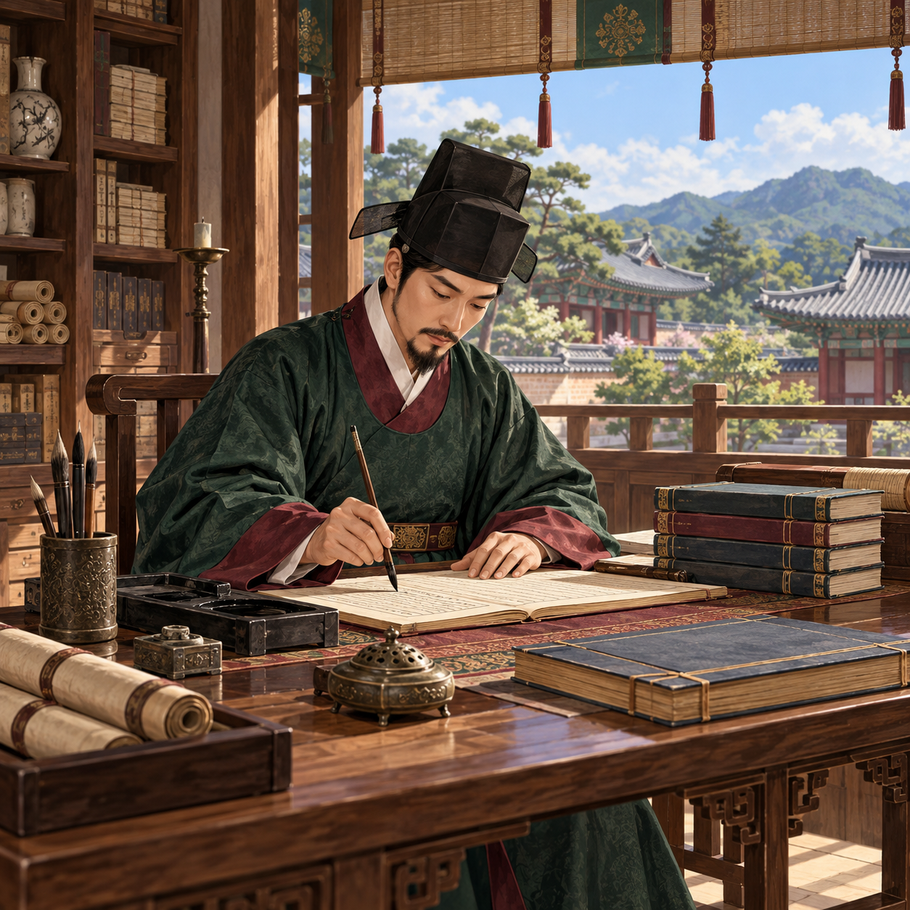
학습용 요약 대화 · 실제 발언을 그대로 옮긴 것이 아니에요.
학자 · 설명용 인물지난 나라들의 역사를 책으로 남긴다.
제자 · 설명용 인물단군 이야기부터 적은 책도 있지요.
- 인종 때김부식이 삼국사기를 기전체로 썼다(1145). 남아 있는 가장 오래된 역사서다.
- 무신 때이규보의 동명왕편은 고구려 계승 의식을, 각훈의 해동고승전은 이름난 승려들의 전기를 담았다.
- 원 간섭일연의 삼국유사와 이승휴의 제왕운기는 단군 이야기를 실었다. 이제현은 원나라에 있던 만권당에서 원 학자들과 교류했다.
그림 안내
책상에서 글을 쓰는 고려 학자를 그린 개념 그림이에요. 특정 저자의 초상이나 다섯 저자가 함께 있는 장면이 아니에요.
흐름 보충 · 유학
이제현은 역옹패설도 썼다. 원 간섭기에 원에서 성리학이 들어왔고, 이색은 성균관에서 정몽주 등 제자를 길렀다.
918 태조 → 광종(과거제) → 경종(976 전시과) → 성종(12목) → 993–1019 거란 침입 → 숙종·예종(여진, 관학) → 인종(1126 이자겸, 1135 묘청) → 1170 무신 정변 → 1196 최충헌 → 1231 몽골 침입·1232 강화 천도 → 1270 개경 환도·삼별초 → 원 간섭기 → 공민왕(1356 개혁) → 우왕(왜구) → 1388 위화도 회군 → 1391 과전법 → 1392 조선 건국
경제·신앙·기록(고려 전 시기 · 주제별): 깊이갈이·전시과·벽란도 · 의천·지눌 · 청자·경천사지 탑 · 직지 · 역사서 다섯 권
다 읽었다면 퀴즈로 확인하기 →